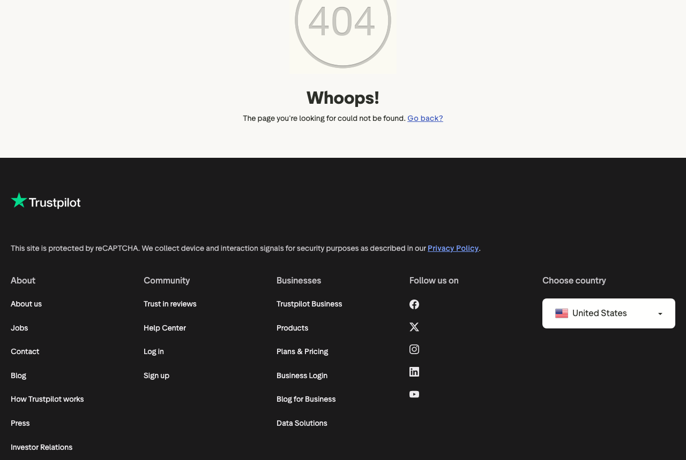

Backbone Customer Service
Persoonlijk bericht aan Refished
Backbone Customer Service
Persoonlijk bericht aan Refished
Backbone Customer Service
Persoonlijk bericht aan Refished
Backbone Customer Service
Persoonlijk bericht aan Refished
Gecirculeerde materialen, beperkte oplages, bewuste consumenten. Dat is een prachtige propositie. Maar het legt ook een lat: de klant van Refished stelt meer vragen dan de gemiddelde online shopper. Over materialen, productieproces, retourbeleid. Die vragen vragen om inhoudelijke antwoorden.
Ik kijk naar hoe Refished zichtbaar is. Een merk dat in alles wat het maakt laat zien dat het aandacht heeft voor detail. De klant die bewust kiest voor circulaire mode, verwacht dat die aandacht ook doorloopt in het klantcontact.
Mijn naam is Jeffrey. Samen met Dylan run ik Backbone Customer Service. We leren het merk kennen, werken met vaste mensen, en zijn bereikbaar op de kanalen die jullie klanten gebruiken.
Dit zijn patronen die ik zie bij merken met unieke producten en bewuste kopers. Ze zijn structureel, en ze zijn oplosbaar.

Circulaire mode genereert unieke productvragen die generieke templates niet aankunnen. Wat is de herkomst van dit materiaal? Hoe was je dit? Past het bij een tweede item uit een vorige oplage? Dit zijn vragen die klanten van Refished stellen. Ze zijn terecht. En ze zijn niet te beantwoorden met standaardformuleringen. Ze vereisen kennis van de specifieke producten, de materialen en de herkomst van elk stuk.
Beperkte oplages scheppen een bijzondere CS-situatie. Zodra iets uitverkocht is, zijn er teleurgestelde klanten. Hoe je dat moment afhandelt, bepaalt of ze terugkomen voor de volgende drop. Een klant die een eerlijk, vriendelijk antwoord krijgt waarom iets weg is en wat er aankomt, is een klant die de volgende keer op tijd erbij is. Een klant die niets hoort, schrijft een review.
De bewuste consument verwacht consistentie in waarden. Een trage of onpersoonlijke CS-reactie breekt het verhaal van het merk. Wie voor Refished kiest, kiest voor een merk dat het anders doet. Als de klantenservice aanvoelt als die van een willekeurige webshop, is de verbinding verbroken. Dat is een kwetsbaarheid die niet zichtbaar is totdat het te laat is.
We nemen de klantenservice volledig over. Inclusief de productkennis en de toon die past bij het merk en de klant die het aanspreekt.
Backbone Customer Service zijn Dylan en ik. We runnen dit samen. Persoonlijk, betrokken, en volledig gefocust op Shopify D2C-merken die ergens voor staan.

Ik ben Jeffrey, co-founder van Backbone. Samen met Dylan help ik Shopify D2C-merken om hun klantenservice professioneel en persoonlijk te runnen. We leren elk merk van binnen kennen: de producten, de waarden, de klant die het aanspreekt. Zodat de CS aanvoelt als een verlengstuk van het merk, en niet als een generieke helpdesk.
Ik wil gewoon even horen hoe het bij jullie gaat en uitleggen wat wij doen. Vrijblijvend.